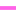

<!doctype html>
<html lang="en">
    <head>
        <meta charset="utf-8">
        <meta http-equiv="X-UA-Compatible" content="IE=edge">
        <meta name="viewport" content="initial-scale=1,user-scalable=no,maximum-scale=1,width=device-width">
        <meta name="mobile-web-app-capable" content="yes">
        <meta name="apple-mobile-web-app-capable" content="yes">
        <link rel="stylesheet" href="css/leaflet.css"><link rel="stylesheet" href="css/L.Control.Locate.min.css">
        <link rel="stylesheet" href="css/qgis2web.css"><link rel="stylesheet" href="css/fontawesome-all.min.css">
        <link rel="stylesheet" href="css/leaflet-search.css">
        <style>
        html, body, #map {
            width: 100%;
            height: 100%;
            padding: 0;
            margin: 0;
        }
        </style>
        <title></title>
    </head>
    <body>
        <div id="map">
        </div>
        <script src="js/qgis2web_expressions.js"></script>
        <script src="js/leaflet.js"></script><script src="js/L.Control.Locate.min.js"></script>
        <script src="js/leaflet.rotatedMarker.js"></script>
        <script src="js/leaflet.pattern.js"></script>
        <script src="js/leaflet-hash.js"></script>
        <script src="js/Autolinker.min.js"></script>
        <script src="js/rbush.min.js"></script>
        <script src="js/labelgun.min.js"></script>
        <script src="js/labels.js"></script>
        <script src="js/leaflet-search.js"></script>
        <script src="data/_3.js"></script>
        <script src="data/17_4.js"></script>
        <script src="data/16_5.js"></script>
        <script src="data/142_6.js"></script>
        <script src="data/13_7.js"></script>
        <script src="data/12_8.js"></script>
        <script src="data/81_9.js"></script>
        <script src="data/61_10.js"></script>
        <script>
        var map = L.map('map', {
            zoomControl:true, maxZoom:22, minZoom:1
        }).fitBounds([[16.731706915518593,100.1514275803999],[16.887867092812836,100.4601876894433]]);
        var hash = new L.Hash(map);
        map.attributionControl.setPrefix('<a href="https://github.com/tomchadwin/qgis2web" target="_blank">qgis2web</a> &middot; <a href="https://leafletjs.com" title="A JS library for interactive maps">Leaflet</a> &middot; <a href="https://qgis.org">QGIS</a>');
        var autolinker = new Autolinker({truncate: {length: 30, location: 'smart'}});
        L.control.locate({locateOptions: {maxZoom: 19}}).addTo(map);
        var bounds_group = new L.featureGroup([]);
        function setBounds() {
        }
        map.createPane('pane_OpenStreetMap_0');
        map.getPane('pane_OpenStreetMap_0').style.zIndex = 400;
        var layer_OpenStreetMap_0 = L.tileLayer('http://tile.openstreetmap.org/{z}/{x}/{y}.png', {
            pane: 'pane_OpenStreetMap_0',
            opacity: 1.0,
            attribution: '',
            minZoom: 1,
            maxZoom: 22,
            minNativeZoom: 0,
            maxNativeZoom: 18
        });
        layer_OpenStreetMap_0;
        map.addLayer(layer_OpenStreetMap_0);
        map.createPane('pane_GoogleSatellite_1');
        map.getPane('pane_GoogleSatellite_1').style.zIndex = 401;
        var layer_GoogleSatellite_1 = L.tileLayer('https://mt1.google.com/vt/lyrs=s&x={x}&y={y}&z={z}', {
            pane: 'pane_GoogleSatellite_1',
            opacity: 1.0,
            attribution: '',
            minZoom: 1,
            maxZoom: 22,
            minNativeZoom: 0,
            maxNativeZoom: 18
        });
        layer_GoogleSatellite_1;
        map.addLayer(layer_GoogleSatellite_1);
        map.createPane('pane_GoogleHybrid_2');
        map.getPane('pane_GoogleHybrid_2').style.zIndex = 402;
        var layer_GoogleHybrid_2 = L.tileLayer('https://mt1.google.com/vt/lyrs=y&x={x}&y={y}&z={z}', {
            pane: 'pane_GoogleHybrid_2',
            opacity: 1.0,
            attribution: '',
            minZoom: 1,
            maxZoom: 22,
            minNativeZoom: 0,
            maxNativeZoom: 18
        });
        layer_GoogleHybrid_2;
        map.addLayer(layer_GoogleHybrid_2);
        function pop__3(feature, layer) {
            var popupContent = '<table>\
                    <tr>\
                        <td colspan="2">' + (feature.properties['Name'] !== null ? autolinker.link(feature.properties['Name'].toLocaleString()) : '') + '</td>\
                    </tr>\
                    <tr>\
                        <td colspan="2">' + (feature.properties['Number'] !== null ? autolinker.link(feature.properties['Number'].toLocaleString()) : '') + '</td>\
                    </tr>\
                    <tr>\
                        <td colspan="2">' + (feature.properties['N31'] !== null ? autolinker.link(feature.properties['N31'].toLocaleString()) : '') + '</td>\
                    </tr>\
                </table>';
            layer.bindPopup(popupContent, {maxHeight: 400});
        }

        function style__3_0() {
            return {
                pane: 'pane__3',
                opacity: 1,
                color: 'rgba(0,0,0,1.0)',
                dashArray: '',
                lineCap: 'square',
                lineJoin: 'bevel',
                weight: 1.0,
                fillOpacity: 0,
                interactive: true,
            }
        }
        map.createPane('pane__3');
        map.getPane('pane__3').style.zIndex = 403;
        map.getPane('pane__3').style['mix-blend-mode'] = 'normal';
        var layer__3 = new L.geoJson(json__3, {
            attribution: '',
            interactive: true,
            dataVar: 'json__3',
            layerName: 'layer__3',
            pane: 'pane__3',
            onEachFeature: pop__3,
            style: style__3_0,
        });
        bounds_group.addLayer(layer__3);
        map.addLayer(layer__3);
        function pop_17_4(feature, layer) {
            var popupContent = '<table>\
                    <tr>\
                        <td colspan="2">' + (feature.properties['ป้า�'] !== null ? autolinker.link(feature.properties['ป้า�'].toLocaleString()) : '') + '</td>\
                    </tr>\
                </table>';
            layer.bindPopup(popupContent, {maxHeight: 400});
        }

        function style_17_4_0() {
            return {
                pane: 'pane_17_4',
                opacity: 1,
                color: 'rgba(56,34,5,1.0)',
                dashArray: '',
                lineCap: 'square',
                lineJoin: 'bevel',
                weight: 4.0,
                fillOpacity: 0,
                interactive: true,
            }
        }
        map.createPane('pane_17_4');
        map.getPane('pane_17_4').style.zIndex = 404;
        map.getPane('pane_17_4').style['mix-blend-mode'] = 'normal';
        var layer_17_4 = new L.geoJson(json_17_4, {
            attribution: '',
            interactive: true,
            dataVar: 'json_17_4',
            layerName: 'layer_17_4',
            pane: 'pane_17_4',
            onEachFeature: pop_17_4,
            style: style_17_4_0,
        });
        bounds_group.addLayer(layer_17_4);
        map.addLayer(layer_17_4);
        function pop_16_5(feature, layer) {
        }

        function style_16_5_0() {
            return {
                pane: 'pane_16_5',
                opacity: 1,
                color: 'rgba(227,26,28,1.0)',
                dashArray: '',
                lineCap: 'square',
                lineJoin: 'bevel',
                weight: 4.0,
                fillOpacity: 0,
                interactive: true,
            }
        }
        map.createPane('pane_16_5');
        map.getPane('pane_16_5').style.zIndex = 405;
        map.getPane('pane_16_5').style['mix-blend-mode'] = 'normal';
        var layer_16_5 = new L.geoJson(json_16_5, {
            attribution: '',
            interactive: true,
            dataVar: 'json_16_5',
            layerName: 'layer_16_5',
            pane: 'pane_16_5',
            onEachFeature: pop_16_5,
            style: style_16_5_0,
        });
        bounds_group.addLayer(layer_16_5);
        map.addLayer(layer_16_5);
        function pop_142_6(feature, layer) {
            var popupContent = '<table>\
                    <tr>\
                        <td colspan="2">' + (feature.properties['id'] !== null ? autolinker.link(feature.properties['id'].toLocaleString()) : '') + '</td>\
                    </tr>\
                </table>';
            layer.bindPopup(popupContent, {maxHeight: 400});
        }

        function style_142_6_0() {
            return {
                pane: 'pane_142_6',
                opacity: 1,
                color: 'rgba(145,38,161,1.0)',
                dashArray: '',
                lineCap: 'square',
                lineJoin: 'bevel',
                weight: 4.0,
                fillOpacity: 0,
                interactive: true,
            }
        }
        map.createPane('pane_142_6');
        map.getPane('pane_142_6').style.zIndex = 406;
        map.getPane('pane_142_6').style['mix-blend-mode'] = 'normal';
        var layer_142_6 = new L.geoJson(json_142_6, {
            attribution: '',
            interactive: true,
            dataVar: 'json_142_6',
            layerName: 'layer_142_6',
            pane: 'pane_142_6',
            onEachFeature: pop_142_6,
            style: style_142_6_0,
        });
        bounds_group.addLayer(layer_142_6);
        map.addLayer(layer_142_6);
        function pop_13_7(feature, layer) {
            var popupContent = '<table>\
                    <tr>\
                        <td colspan="2">' + (feature.properties['id'] !== null ? autolinker.link(feature.properties['id'].toLocaleString()) : '') + '</td>\
                    </tr>\
                </table>';
            layer.bindPopup(popupContent, {maxHeight: 400});
        }

        function style_13_7_0() {
            return {
                pane: 'pane_13_7',
                opacity: 1,
                color: 'rgba(0,114,190,1.0)',
                dashArray: '',
                lineCap: 'square',
                lineJoin: 'bevel',
                weight: 4.0,
                fillOpacity: 0,
                interactive: true,
            }
        }
        map.createPane('pane_13_7');
        map.getPane('pane_13_7').style.zIndex = 407;
        map.getPane('pane_13_7').style['mix-blend-mode'] = 'normal';
        var layer_13_7 = new L.geoJson(json_13_7, {
            attribution: '',
            interactive: true,
            dataVar: 'json_13_7',
            layerName: 'layer_13_7',
            pane: 'pane_13_7',
            onEachFeature: pop_13_7,
            style: style_13_7_0,
        });
        bounds_group.addLayer(layer_13_7);
        map.addLayer(layer_13_7);
        function pop_12_8(feature, layer) {
            var popupContent = '<table>\
                    <tr>\
                        <td colspan="2">' + (feature.properties['id'] !== null ? autolinker.link(feature.properties['id'].toLocaleString()) : '') + '</td>\
                    </tr>\
                </table>';
            layer.bindPopup(popupContent, {maxHeight: 400});
        }

        function style_12_8_0() {
            return {
                pane: 'pane_12_8',
                opacity: 1,
                color: 'rgba(226,237,25,1.0)',
                dashArray: '',
                lineCap: 'square',
                lineJoin: 'bevel',
                weight: 4.0,
                fillOpacity: 0,
                interactive: true,
            }
        }
        map.createPane('pane_12_8');
        map.getPane('pane_12_8').style.zIndex = 408;
        map.getPane('pane_12_8').style['mix-blend-mode'] = 'normal';
        var layer_12_8 = new L.geoJson(json_12_8, {
            attribution: '',
            interactive: true,
            dataVar: 'json_12_8',
            layerName: 'layer_12_8',
            pane: 'pane_12_8',
            onEachFeature: pop_12_8,
            style: style_12_8_0,
        });
        bounds_group.addLayer(layer_12_8);
        map.addLayer(layer_12_8);
        function pop_81_9(feature, layer) {
            var popupContent = '<table>\
                    <tr>\
                        <td colspan="2">' + (feature.properties['id'] !== null ? autolinker.link(feature.properties['id'].toLocaleString()) : '') + '</td>\
                    </tr>\
                </table>';
            layer.bindPopup(popupContent, {maxHeight: 400});
        }

        function style_81_9_0() {
            return {
                pane: 'pane_81_9',
                opacity: 1,
                color: 'rgba(105,195,255,1.0)',
                dashArray: '',
                lineCap: 'square',
                lineJoin: 'bevel',
                weight: 4.0,
                fillOpacity: 0,
                interactive: true,
            }
        }
        map.createPane('pane_81_9');
        map.getPane('pane_81_9').style.zIndex = 409;
        map.getPane('pane_81_9').style['mix-blend-mode'] = 'normal';
        var layer_81_9 = new L.geoJson(json_81_9, {
            attribution: '',
            interactive: true,
            dataVar: 'json_81_9',
            layerName: 'layer_81_9',
            pane: 'pane_81_9',
            onEachFeature: pop_81_9,
            style: style_81_9_0,
        });
        bounds_group.addLayer(layer_81_9);
        map.addLayer(layer_81_9);
        function pop_61_10(feature, layer) {
            var popupContent = '<table>\
                    <tr>\
                        <td colspan="2">' + (feature.properties['id'] !== null ? autolinker.link(feature.properties['id'].toLocaleString()) : '') + '</td>\
                    </tr>\
                </table>';
            layer.bindPopup(popupContent, {maxHeight: 400});
        }

        function style_61_10_0() {
            return {
                pane: 'pane_61_10',
                opacity: 1,
                color: 'rgba(255,99,232,1.0)',
                dashArray: '',
                lineCap: 'square',
                lineJoin: 'bevel',
                weight: 4.0,
                fillOpacity: 0,
                interactive: true,
            }
        }
        map.createPane('pane_61_10');
        map.getPane('pane_61_10').style.zIndex = 410;
        map.getPane('pane_61_10').style['mix-blend-mode'] = 'normal';
        var layer_61_10 = new L.geoJson(json_61_10, {
            attribution: '',
            interactive: true,
            dataVar: 'json_61_10',
            layerName: 'layer_61_10',
            pane: 'pane_61_10',
            onEachFeature: pop_61_10,
            style: style_61_10_0,
        });
        bounds_group.addLayer(layer_61_10);
        map.addLayer(layer_61_10);
        var baseMaps = {};
        L.control.layers(baseMaps,{' สายที่ 6 สถานีขนส่งผู้โดยสารจังหวัดพิษณุโลกแห่งที่ 1 - บ้านกร่าง': layer_61_10,' สายที่ 8 สถานีขนส่งผู้โดยสารจังหวัดพิษณุโลกแห่งที่ 1 - วัดอรัญญิก': layer_81_9,' สายที่ 12 มหาวิทยาลัยนเรศวร (ถนนสนามบิน) -  มหาวิทยาลัยนเรศวร (ทุ่งหนองอ้อ)': layer_12_8,' สายที่ 13 มหาวิทยาลัยราชภัฏพิบูลส่งคราม(ส่วนทะเลแก้ว) - องค์การบิหารส่วนตำบลสมอแข': layer_13_7,' สานที่ 14 ห้างเส้นทรัลพลาซาพิษณุโลก - สำนักงานขนส่งจังหวัดพิษณุโลกแห่งที่2': layer_142_6,' สายที่16 มหาวิทยาลัยนเรศวร(สนามบิน) - บึงพระ - มหาวิทยาลัยนเรศวร(ทุ้งหนองอ้อ)': layer_16_5,' สายที่ 17 สถานีรถไฟพิษณุโลก - วัดจุฬามณี - โรงเรียนพิษณุโลกพิทยาคม (แห่งใหม่)': layer_17_4,' ขอบเขตจังหวัดพิษณุโลก': layer__3,"Google Hybrid": layer_GoogleHybrid_2,"Google Satellite": layer_GoogleSatellite_1,"OpenStreetMap": layer_OpenStreetMap_0,}).addTo(map);
        setBounds();
        var i = 0;
        layer__3.eachLayer(function(layer) {
            var context = {
                feature: layer.feature,
                variables: {}
            };
            layer.bindTooltip((layer.feature.properties['Name'] !== null?String('<div style="color: #000000; font-size: 12pt; font-weight: bold; font-family: \'DilleniaUPC\', sans-serif;">' + layer.feature.properties['Name']) + '</div>':''), {permanent: true, offset: [-0, -16], className: 'css__3'});
            labels.push(layer);
            totalMarkers += 1;
              layer.added = true;
              addLabel(layer, i);
              i++;
        });
        map.addControl(new L.Control.Search({
            layer: layer_61_10,
            initial: false,
            hideMarkerOnCollapse: true,
            propertyName: 'id'}));
        document.getElementsByClassName('search-button')[0].className +=
         ' fa fa-binoculars';
        resetLabels([layer__3]);
        map.on("zoomend", function(){
            resetLabels([layer__3]);
        });
        map.on("layeradd", function(){
            resetLabels([layer__3]);
        });
        map.on("layerremove", function(){
            resetLabels([layer__3]);
        });
        </script>
    </body>
</html>
